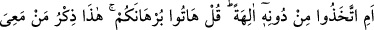
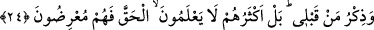

Bunun üzerine Hızır (a.s.) Musâ’dan ayrılacağını söyledi. Böylece Mûsâ (a.s.) onunla
beraberliğin bereketinden mahrum kaldı. Onun ilminden daha fazlasını elde etme
bereketi ve Allâh’ın onun yanında kıldığı hayır kesildi.
Îtiraz etmenin kötülüklerinden biri de Hâriciler’in başına gelen iştir. Onlar Ali (r.a.)’a
îtiraz ettiler ve ona karşı çıktılar. Böylelikle dinden çıktılar, cehennem ateşinin
köpekleri ve gök kubbe altında öldürülen en şerli kimseler oldular.
Bayezid Bistâmî (k.s.), kendisine muhâlefet eden talebesi hakkında: “Allâh’ın
gözünden düşen kişiyi bırakın.” demiştir. Bir müddet sonra o, kadınımsı hareketler
yapan kimselerle birlikte görülmüş, hırsızlık yapmış ve eli kesilmiştir.
İşte îtiraz eden kimsenin dünyadaki hâli budur. Âhiretteki durumuna gelince, Allah
onunla konuşmaz, onun yüzüne bakmaz, ayrılık ve hicran cehenneminin ateşinde onun
için acıklı bir azap vardır.
Fakir (Bursevî) der ki:
Uyanık ol, mürşid-i kâmil ile tartışma
Aman dikkat et, tartıştığından ötürü yoldan sapıverirsin
24. Yoksa O’ndan başka bir takım ilahlar mı edindiler? De ki: Haydi delillerinizi
getirin! İşte benimle beraber olanların Kitab’ı ve benden öncekilerin Kitab’ı. Hayır,
onların çoğu hakkı bilmezler; bu yüzden de yüz çevirirler.
“Yoksa O’ndan başka bir takım ilahlar mı edindiler?” Bu soru, onların Allah’tan
başka ilahlar edinmelerini reddetmek, çirkinliğini ve büyük bir cür’et olduğunu
belirtmek içindir. Yâni ilah edindikleri şeylerin bütünüyle ilahlık özelliklerini
taşımadıkları ortaya çıktığı halde Allah Teâlâ’yı bırakıp başka ilahlar edindiler.
Onları ilzâm etmek ve ağızlarının payını vermek için “De ki: Haydi” iddiânızı isbat
edecek aklî ve naklî “delillerinizi getirin!” Çünkü, dînî konularda, özellikle de bu çok
önemli hususta delili olmayan bir sözün geçerliliği yoktur.
el-Müfredât’ta şöyle der: “Burhan, delillerin en kuvvetlisidir. Ebediyyen doğru
olmayı gerektirir.”
“İşte benimle beraber olanların Kitab’ı ve benden öncekilerin Kitab’ı.”
Buradaki “ ” (işte)” lafzı, o vakitte aralarında mevcut olan üç kitaba; Kur’an, Tevrât
ve İncil’e işarettir. Kur’an, Hz. Peygamber (a.s.)’a kıyâmete kadar tâbi olacak bütün
insanlara bir öğüt, bir vaazdır. Tevrat ve İncil ise Rasûlullah (s.a.)’den önceki
ümmetlere vaaz ve öğüt idi.
Yâni, bu üç kitaba müracaat edin, bakalım onlardan birinde tevhid inancından başka